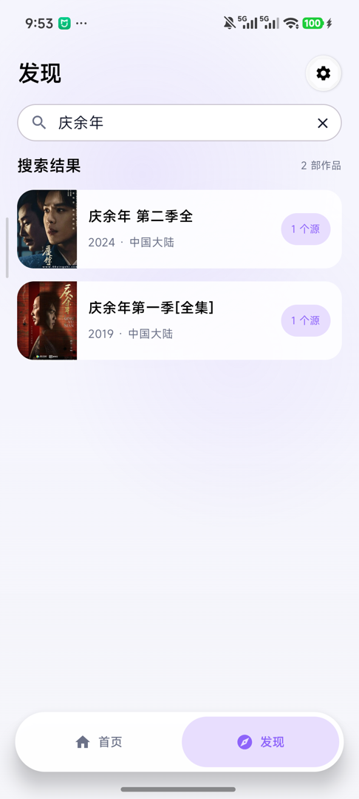
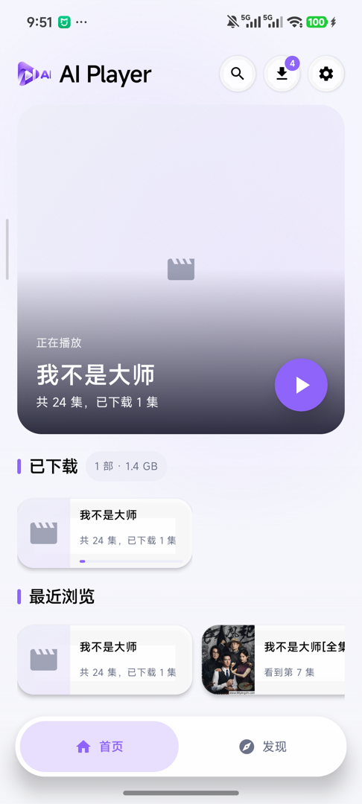
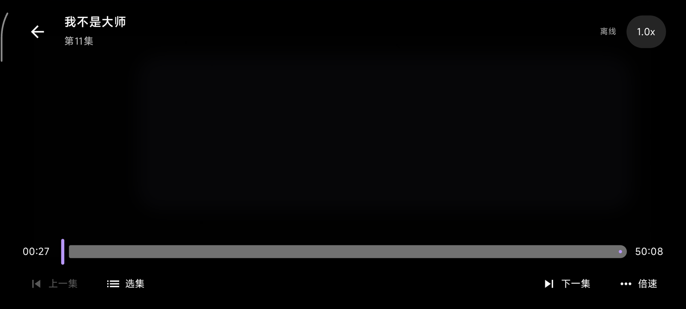
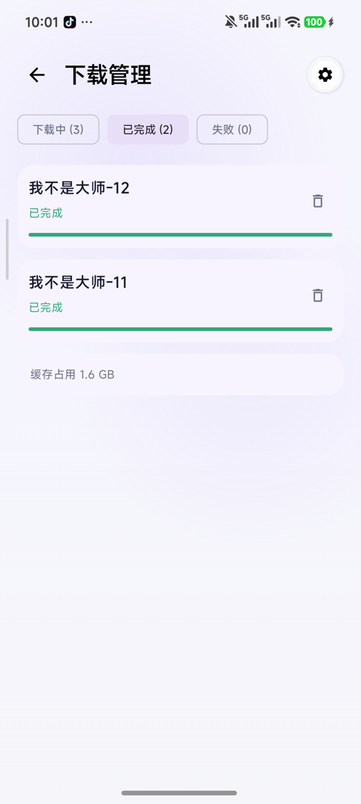
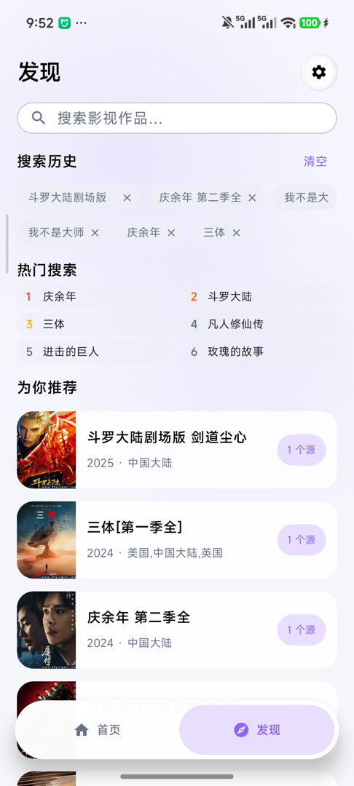
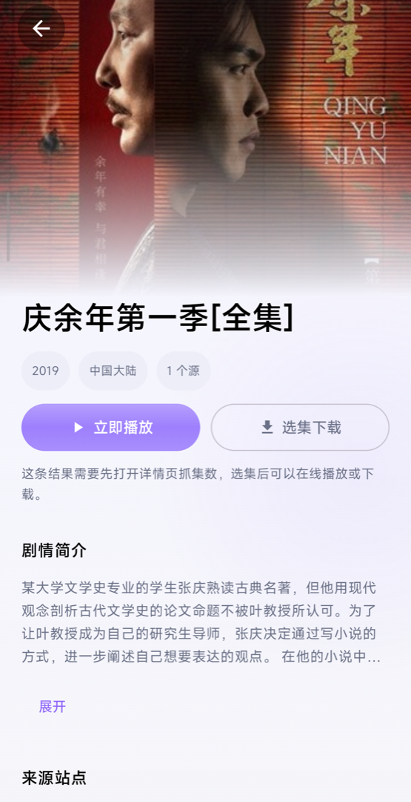

一次搜索，所有源
搜索并行请求全部已启用源，同名结果自动聚合为「N 个源」。支持苹果 CMS、帝国 CMS 与通用 HTML 站点，规则自动探测并缓存。
AI Player 是一个免费开源的 Android 视频播放器：跨源订阅搜索、离线下载、秒开缓存播放。不内置任何视频源，所有数据留在你的设备上。
需要你自己添加订阅站点，并确保对其内容拥有合法访问权限。

横屏播放器带倍速、选集、前后十秒与断点续播；离线模式只读本地缓存，没有网络也照常打开。在线播放会顺手写入缓存——看过一次的内容，重看时秒开。


搜索并行请求全部已启用源，同名结果自动聚合为「N 个源」。支持苹果 CMS、帝国 CMS 与通用 HTML 站点，规则自动探测并缓存。

基于 Media3 DownloadManager 与 SQLite 索引：杀进程自动恢复，选集批量下载、暂停续传、失败分类重试、网络闸门与磁盘空间预判。

海报共享元素转场、控制层淡入淡出；跟随系统「移除动画」设置。417 个单元测试覆盖解析、聚合与下载状态机，CI 每次提交全量验证。
App 出厂时源列表为空——这是刻意的设计。
设置 → 订阅源 → 填入站点首页地址。App 自动探测该站的搜索规则，探测成功后规则缓存复用。
在发现页搜索一次，结果按作品名聚合，标注每个作品来自几个源，选源播放或下载。
在线播放自动写入缓存；下载支持选集批量与断点恢复，之后随时随地离线观看。

本仓库只提供播放器与订阅框架，不内置、不推荐、不附带任何视频源。你必须确保对所添加源的内容拥有合法访问权限；因使用本工具访问、下载、传播侵权内容而产生的一切后果由使用者自行承担。项目作者不对任何第三方站点的内容负责。页面截图中的订阅源与片单均为演示数据。
不内置。首次运行时源列表为空，需要你自行添加站点地址。框架支持苹果 CMS、帝国 CMS 与通用 HTML 站点，搜索规则自动探测。
播放进度、下载记录、订阅源全部存储在本机。没有账号体系，没有遥测、统计或广告 SDK。仅两类出站请求：你配置的订阅站点，以及可选（默认关闭）的 DeepSeek API。
任何人分发本程序的修改版（含服务端部署）必须同样开源，防止闭源套壳分发。
JDK 17 + Android SDK（API 36），运行 ./gradlew :app:assembleDebug。单元测试：./gradlew :app:testDebugUnitTest。最低支持 Android 8.0。